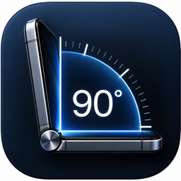

Measure with the hinge.
Questions or feedback? Here's how to reach us.
AngleFold works fully offline and never collects or transmits any data.
AngleFold turns the physical hinge of iPhone Duo into a digital angle-measuring tool. Open the phone against two surfaces and read the current hinge angle instantly — zero it to a reference position, hold a reading, set a target angle with haptic feedback, or calculate a basic miter angle.
AngleFold is designed as a convenient everyday measuring tool. It is not certified metrology equipment and should not be used where safety or regulatory requirements depend on a calibrated measurement instrument. Live hinge measurement requires compatible iPhone Duo hardware.